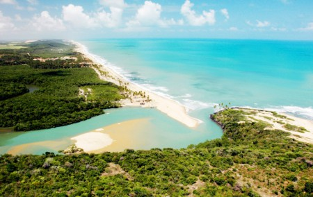

Prais do Brasil
Praias do Brasil
O Brasil é um pais tropicais conhecidos pelas prais mais bonitas do planeta. Confira as melhores praias para esse verão.
Jericoacara

Jericoacoara é uma praia localizada na vila homônima, no município de Jijoca de Jericoacoara, no estado do Ceará, no Brasil. Está localizada a 295 km a oeste da capital do estado, Fortaleza. Foi eleita em 1994 pelo jornal estadunidense The Washington Post uma das dez praias mais bonitas do planeta.Em 2014, foi eleita pelo Huffington Post a quarta melhor praia da Terra.É um dos locais mais frequentados por praticantes de windsurfe no país. A praia é parte integrante do Parque Nacional de Jericoacoara.
Atracoes:
- Pedra Furada.
- Duna do por do sol.
- Igreja nossa Senhora da Consolação.
- Serrote.
- Farol de Jericoacoara.
- Campo das Dunas
Praia Grande de Ubatuba

Encravada entre a serra e o mar, Ubatuba é um dos mais espetaculares e bem preservados destinos do Litoral Norte de São Paulo. E serão necessárias muitas viagens para conhecer as mais de cem praias que recheiam o cenário recortado desse pedacinho da Serra do Mar. Ubatuba encanta com praias ainda desertas e de natureza quase intocada, muitas com acesso fácil e outras com lindas trilhas em meio à Mata Atlântica.
Atrações
Surfar em Ubatuba.
Trilha das 7 Praias.
Gruta que Chora.
Ruínas da Lagoinha.
Cachoeira do Prumirim.
Mirante Baguari de Fora.
Praia do Cedro.
Barra de Camaratuba

Barra de Camaratuba é uma praia que está localizada no município de Mataraca, distante 110 km da capital João Pessoa; ela é também a última praia do litoral norte da Paraíba, fazendo divisa com o Rio Grande do Norte. Privilegiada pela sua exuberância natural e selvagem, a praia proporciona aos visitantes diversos passeios para conhecer os encantos e magias da região. Além de emocionantes passeios de buggy pelas extensas praias ligando a Paraíba ao Rio Grande do Norte, o turista tem a oportunidade de conhecer a reserva indígena dos potiguaras, vivenciando os costumes e danças com os nativos. O acesso à reserva indígena pode ser feito de barco ou jangada, através do manguezal.
Atrações
quadriciclo.
explorar as dunas de areia.
cruzar rio.
Passeio de 4x4 leva os viajantes a praias remotas e intocadas, onde podem desfrutar de uma experiência de praia mais isolada e tranquila.
Praia de Caraguatatuba

Caraguatatuba é um município brasileiro no litoral norte do estado de São Paulo. Conhecida como a capital do litoral norte, Integra a Região Imediata de Caraguatatuba-Ubatuba-São Sebastião, localizando-se a leste da capital do estado e distando desta cerca de 178 km. A cidade ocupa uma área de 484,947 km². De acordo com o Censo 2022, a população do município é de 134.873 habitantes, resultando em uma densidade demográfica de 278,12 hab./km², sendo o 57.º município mais populoso de São Paulo e o 219.º do país. O município é formado pela sede e pelo distrito de Porto Novo.
Atrações
Praia Martim de Sá.
Serramar Shopping.
Parque Trombini.
Praia da Cocanha.
Caraguá Praia Shopping.
Praia do Indaiá.
Terminal Rodoviário Aldo Navarro Magalhães.
Mirante do Camaroeiro.